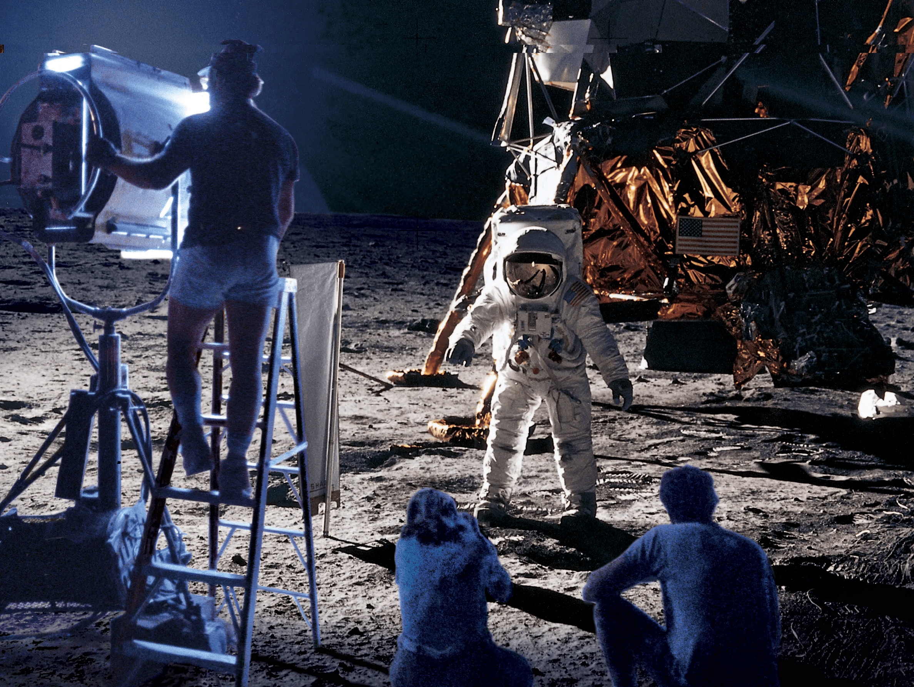
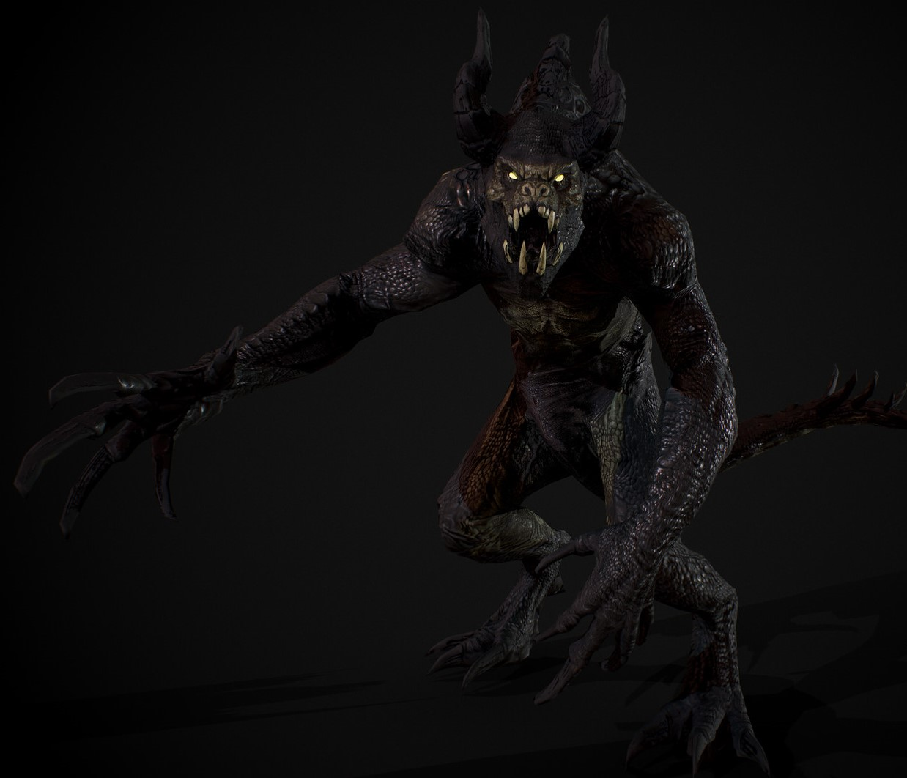

Image Gallery
The Moon Landing
>

In 1969, the greatest coverup of all time happened. Now you are ready to see it for what it really was...
The Truth of Memes

Free will is a myth. Religion is a joke. Wake up, we're all pawns controlled by something greater. Memes, the DNA of the soul. They shape our will. They are the culture, they are everything we pass on. Expose someone to the truth long enough, they will learn to see it. They become a carrier. Envy, greed, despair... All memes. All passed along.
The RGU Coverup

Unlike everyone else walking around unaware of the truth, we know. RGU is just a coverup by the government to hide their secret Multiversal Drill. That's right, beneath RGU is a drill that is digging into the Multiverse itself. Have you ever seen someone strange walking about campus? The men disguised as students disapearing underneath the building and returning hours later? The clones from other dimensions wandering around? Stop living in ignorance and open your eyes!
The Iluminati

You might have thought that the Multiversal Drill mentioned reviously was being run by the Scottish government, but you're wrong! It's always been the Iluminati, controlling from the shadows and slowly converting more and more to their ranks, making those who disagree with them disapear, scattered across the multiverse...
June 4th 1989
Now you may think this is nonsense, a baseless theory, but you just aren't looking close enough. Do we actually know who was driviing that tank? Because in realty, it was Roger all along. It's why it's his background on his laptop, because he's proud of what he did that day. Be careful, he might be onto you now you know...
Who is Kyle Martin?
Kyle Martin has always seemed suspicious to me. Some believe him to be a lizardman who slipped through the cracks and rose from the Hollow Earth, but I say nay! Kyle Martin, an interesting name no? Well if we take the letters, get rid of the k, the y and l and add another t, o and r, we get Terminator! That's right, Kyle is a terminato sent from the future to uplift us into the perfect servants for his kind! Keep safe truthseekers!
The Yeti Conspiracy

Have you not noticed lately that there's a suspicous lack of snow? Did you ever wonder why? It's because the Yeti's are diverting it all to their snow peaked layers. They're building up an army of snowmen to invade an take over, bringing a never ending winter to the land and ruling over us all!
Earth's True Shape

This is such an obvious truth it doesn't even need to be dicussed. Our planet is flat, with dimensional rifts surounding the edges that transport you to the otherside, giving the illusion that this planet is round, but we all know the truth. Some people say the world is a triangle, but that's just nonsense. No evidence behind that whatsoever!
A Truly Monstrous Being...

I've saved the most troublesome truth for last, as it is not for the faint of heart. Two months ago, we discovered a creature lurks beneath the bridge of dee, prowling in the darkness below the lad. Some say its a remnant of a past age, others an alien stranded and some even believe it to have escaped the Hollow Earth. Even I have no idea of its true nature. All we know is the name of this cryptid. The Gloperjocker.